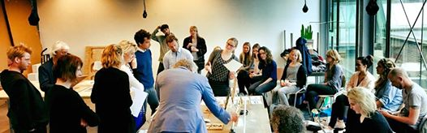
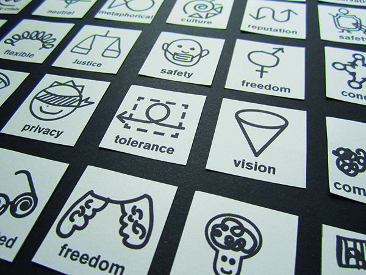
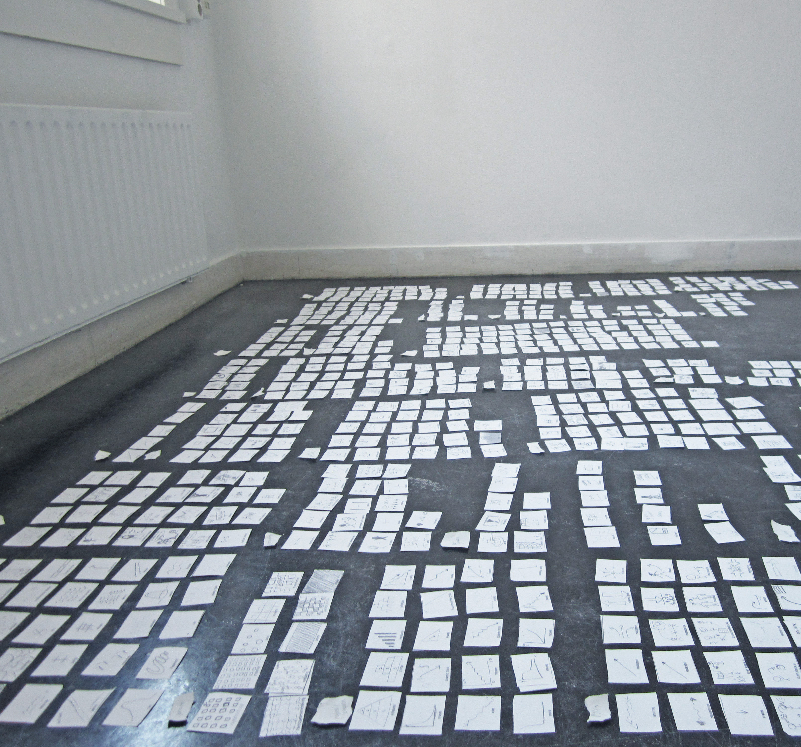
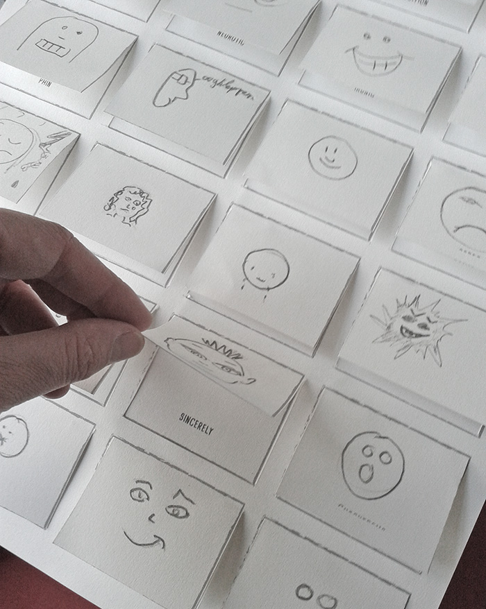
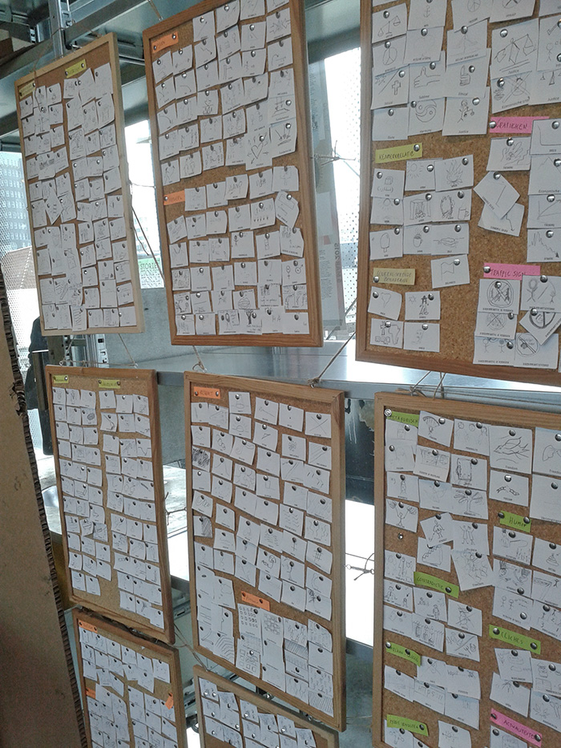
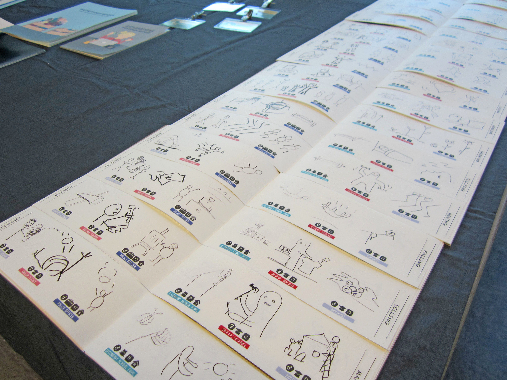
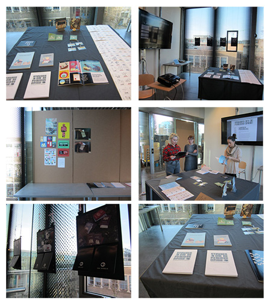

18/05/15
Green light it is!

08/05/15
Digital doodling, converting the drawings to vectors.

03/05/15
I have been working in a analogue way for a long time, now it is getting too messy. Today I started creating my digital drawing database.



16/04/15
Today a lot of people have been contributing to my project! I have been operating in a lot of overcrouwded trains. Amsterdam was out of engery for a while, so for a lot of peple it took a lot of time to get from A to B by train. I tried to use this situation for my project and tried to make make the best of it together with my fellow travelers. I have been meeting a lot of nice, interested and enthousiastic people! If I'm talking about you, thanks for contributing, you are awesome!
26/04/15
Figuring out the logic and lateral thinkig in the drafts.

02/04/15
From now on I'm online! :) Ok, this website is not build in a proper way, but I already needed to have a link to refer to. During my work process I will improve this website, make it interactive, well designed and so on. Your drawings will also be online soon! I will keep you updated on the progress of my project. But first I need to gain more drawings by different people.

This project from the last semester was a starting point for my graduation. It is called 'People drawing verbs'
My last collective assessment